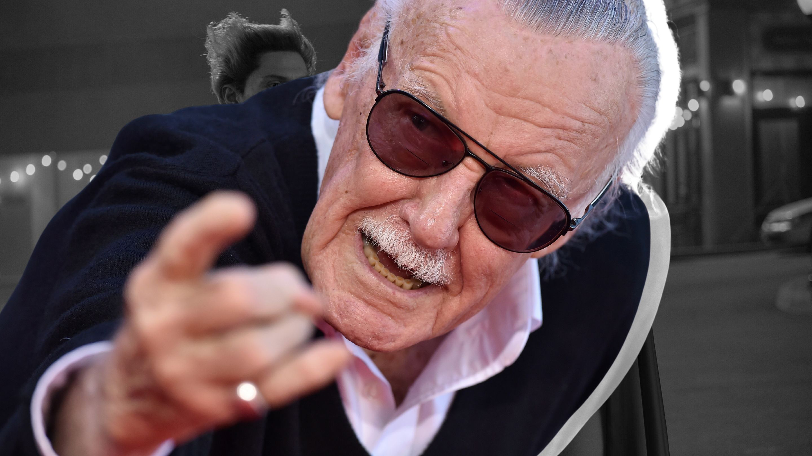

Stan Lee (born Stanley Martin Lieber; December 28, 1922 – November 12, 2018) was an American comic book writer, editor, publisher, and producer. He rose through the ranks of a family-run business called Timely Publications which would later become Marvel Comics' primary creative leader for two decades, leading its expansion from a small division of a publishing house to a multimedia corporation that dominated the comics and film industries.
In collaboration with others at Marvel—particularly co-writers/artists Jack Kirby and Steve Ditko—he co-created characters including superheroes Spider-Man, the X-Men, Iron Man, Thor, the Hulk, Ant-Man, the Wasp, the Fantastic Four, Black Panther, Daredevil, Doctor Strange, Scarlet Witch, and Black Widow. These and other characters' introductions in the 1960s pioneered a more naturalistic approach in superhero comics, and in the 1970s Lee challenged the restrictions of the Comics Code Authority, indirectly leading to changes in its policies. In the 1980s he pursued the development of Marvel properties in other media, with mixed results.